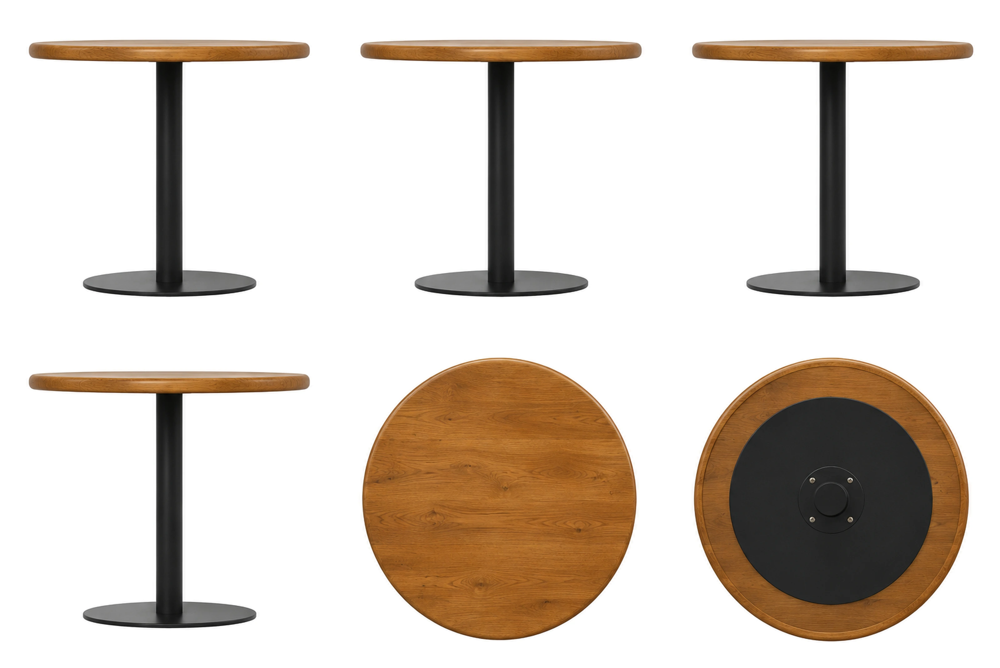
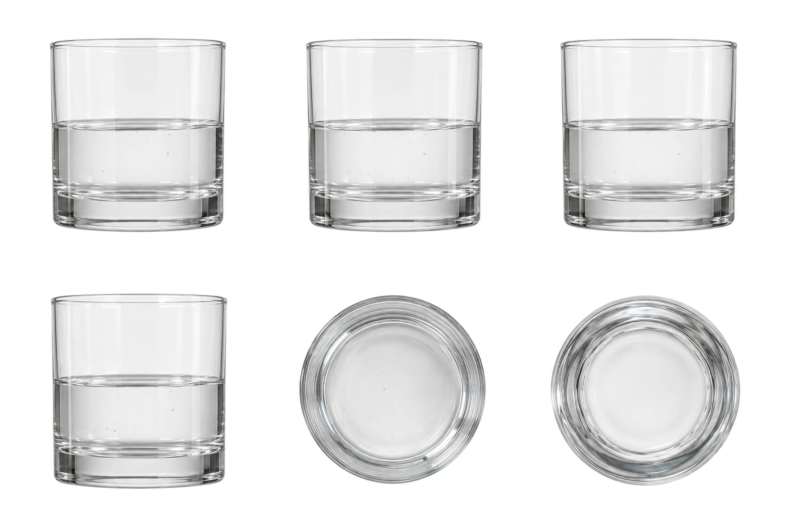
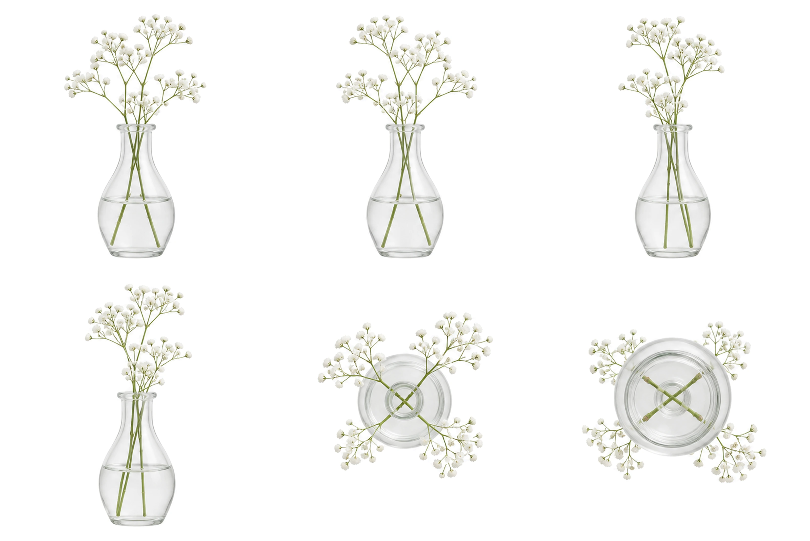
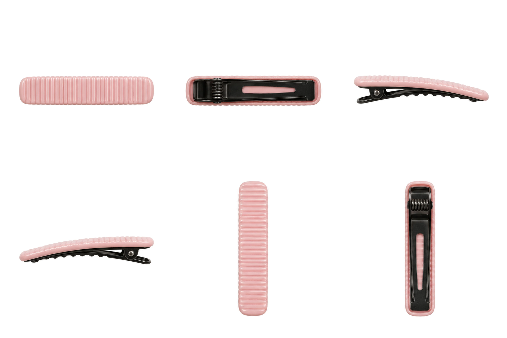

环大陆地区短剧
环大陆地区短剧 · 一集
正在连接在线视频…
视频简介
窗前两人对坐。女生话不多，男生反复解释并试着读懂她的沉默。女生从面无表情到露出笑意，男生却越发局促。在将说未说的停顿里，二人的距离悄悄拉近。
在快手观看原视频 ↗制作资产
角色资产


场景资产
道具资产

实木圆餐桌
蜜棕圆桌面，黑金属单柱脚。 放在两位主角之间，机位绕桌切换。 成片未完整展示的方位按可见造型补全。

曲背咖啡椅
浅核桃靠扶手一体，深灰软坐垫，四木腿。 两把椅子面对面，保证远景座位连续。 成片未完整展示的方位按可见造型补全。

透明杯与水
一只重底短透明水杯，半满。 放男生手边，他在开口前低头抓住杯身。 成片未完整展示的方位按可见造型补全。

米白直筒马克杯
米白哑光陶瓷短筒杯带把。 放女生近手侧，与白色花瓶在同一构图。 成片未完整展示的方位按可见造型补全。

白花玻璃小瓶
透明收口瓶与短枝小白花。 桌面中线定位，正反打保持花束朝向。 成片未完整展示的方位按可见造型补全。

粉色发夹
细长粉色夹，表面略有槽纹。 女生发侧识别，近景不更换位置。 成片未完整展示的方位按可见造型补全。

白色纸巾
卷曲折叠的小白纸巾。 男生反复松手和靠近纸巾，带出紧张状态。 成片未完整展示的方位按可见造型补全。
剧本与分镜
完整剧本与分镜脚本
环大陆地区短剧 · 一集 原片时长 130.17 秒 故事梗概 窗前两人对坐。女生话不多，男生反复解释并试着读懂她的沉默。女生从面无表情到露出笑意，男生却越发局促。在将说未说的停顿里，二人的距离悄悄拉近。 人物 红衣女生主动提出想听真话；灰衣男生从试探到直说；窗边顾客为对坐长镜头提供日常背景。 场景 全片重建为同一间落地窗咖啡馆，正打背景为吧台，反打背景为窗景，左右轴线围绕圆桌。 道具用途 桌椅固定人物空间，水杯和纸巾为男生紧张时的手部动作，马克杯供女生停顿时握住，花瓶作前景，发夹贯穿造型。 剧本与分镜 按原片抽帧重建的复拍制作稿。画面未能确认的对白、音效与镜头节奏按下表执行。 | 镜号 | 画面内容 | 镜头视角 | 使用资产 | 动作描述 | 台词/旁白 | 音效 | 单镜头时长 | | 01 | 两人隔着花瓶相对而坐 | 窗侧双人全景 | 红衣女生、灰衣男生、窗边顾客、落地窗咖啡馆、桌椅 | 男生看她一眼，她把手搭到杯边 | — | 咖啡馆轻声、杯碰桌 | 6.00秒 | | 02 | 女生打量男生，他低头握住水杯 | 近景正反打 | 两位主角、透明杯与水、粉色发夹 | 女生偏头，他在杯沿停了片刻 | 女生：你今天怎么突然约我出来？ | 轻微室内底音 | 8.00秒 | | 03 | 女生坐直，决定让他先开口 | 过肩中近景 | 红衣女生、米白直筒马克杯、白花玻璃小瓶 | 手离开杯把，目光不避开 | 女生：有话你就直接说。 | 杯把轻擦 | 9.00秒 | | 04 | 男生抬手解释 | 女生肩后的中景 | 灰衣男生、透明杯与水、白色纸巾 | 用一只手比画，另一只手落在纸巾边 | 男生：我在想，前几天是不是说得不太好。 | 木面轻触 | 10.00秒 | | 05 | 女生眼睛阖上，男生还在寻找说法 | 脸部近景切男生中景 | 两位主角、粉色发夹 | 女生闭眼瞬间吸气，男生把手从桌上抬起 | 男生：我的意思是，我在意你怎么想。 | 低室内声 | 7.00秒 | | 06 | 男生的表情突然认真 | 脸部近景 | 灰衣男生 | 他说完等回应，下颌僵住 | — | 半拍留白 | 9.00秒 | | 07 | 女生双手靠在杯边听他 | 过肩中景切脸部特写 | 红衣女生、米白直筒马克杯、白花玻璃小瓶 | 她握住杯把，抬眼等下一句 | 女生：那你希望我怎么回答？ | 杯沿轻响 | 9.00秒 | | 08 | 男生张开手，把话往回收 | 侧向越肩近景 | 灰衣男生、白色纸巾 | 两手张开又靠拢，身体往桌前挪 | 男生：你随时都可以告诉我，我会听。 | 衣袖摩擦 | 12.00秒 | | 09 | 女生侧头追问 | 正反打切近景 | 两位主角 | 女生略歪头，男生食指抬起后又收回 | 女生：那就先说你的真心话。 | 话尾落在环境声上 | 13.00秒 | | 10 | 两人沉默几秒，男生脸红 | 窗边双人全景接男生中近景 | 落地窗咖啡馆、两位主角、桌椅 | 有意保持目光错开，男生手指压住纸巾 | — | 时远时近的杯盘声 | 11.00秒 | | 11 | 女生笑了，男生反而更紧张 | 交叉近景 | 红衣女生、灰衣男生 | 女生先弯嘴角，他瞪大眼，随即收敛表情 | 女生：原来你也会紧张啊。 | 柔和短音乐 | 11.00秒 | | 12 | 两人都露出笑意 | 脸部反打转女生中景 | 两位主角、花瓶和马克杯 | 男生低头笑，女生放松肩膀 | 男生：因为是你，我才会这样。 | 环境声淡入 | 12.00秒 | | 13 | 男生放下手，继续看着女生 | 中景推到男生正脸 | 灰衣男生、红衣女生、透明杯与水 | 男生揉了一下脸，手放回桌边，视线抬起 | 男生：我还有一句话想说。 | 轻停顿后切出 | 13.17秒 | 时长合计 130.17 秒